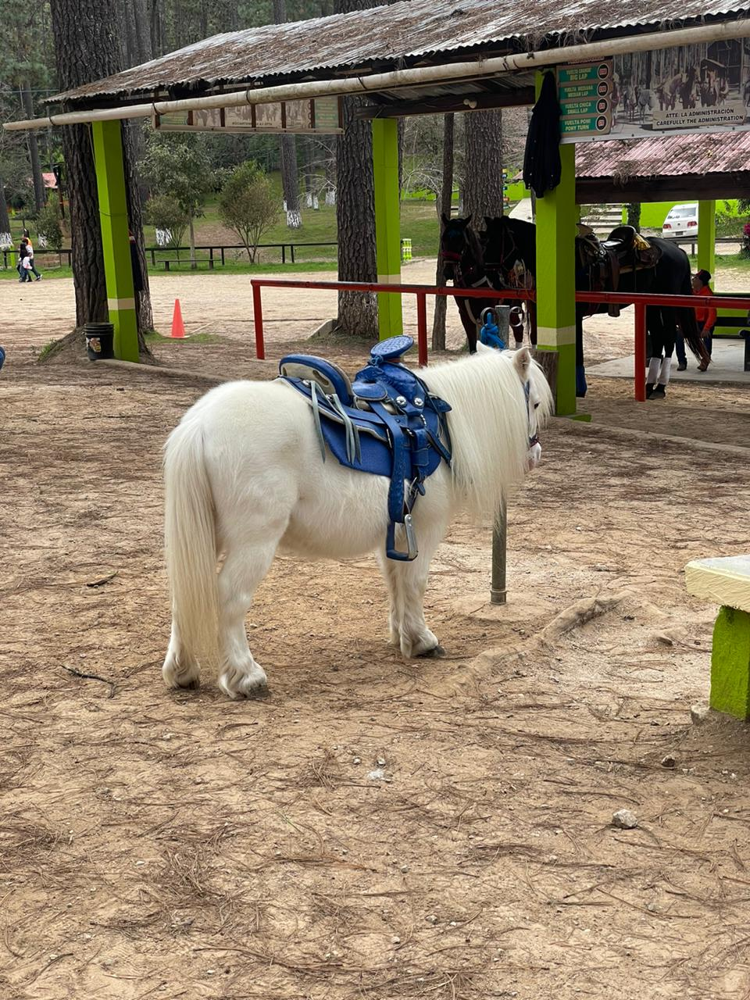

Parque Ecoturístico "Grutas Del Rancho Nuevo"
- Rancho nuevo es un espacio ecoturístico, rodeado de la naturaleza la cual podrás hacer una buena caminata por los bosques, realizar paseos en caballo, una resbaladiza en donde pequeños y grandes podrás disfrutar
como familiar y una gran variedad de lugares en donde comer y sobre todo, venta de artesanías que son los hechas por manos chiapanecas.

- ¿Como llegar a las grutas del Rancho nuevo?
Rancho nuevo se encuentra en san Cristóbal de las casas sobre la carretera 190 con dirección a Comitán de Domínguez, la cual tarda de 10 a 15 minutos en llegar. La forma más común en llegar es pagando una combi.
Que son las que van directamente hacia teopisca, con tan solo mencionar que bajas en rancho nuevo, los conductores ya sabrán que donde llegara tu destino.
- Grutas del rancho nuevo
- Para la entrada cobran 30 pesos en la entrada, pero para poder disfrutar de las grutas son 35 pesos por separado. La cual es recomendable entrar hasta el fondo de las grutas porque es sorprendente. También hay que tener
en cuenta que los paseos a caballo no son gratuitos, dependiendo de la duración de este el precio será uno u otro. Por todo lo demás las resbaladizas y la entrada al recinto son gratuitas.
- Este es un espacio natural situado a 10 kilómetros del Pueblo Mágico de San Cristóbal de las Casas, esta gruta tiene una longitud de 10.2 kilómetros y una profundidad de hasta 550 metros, se puede recorrer por medio de un andador
iluminado que permite apreciar, a lo largo de 750 metros, increíbles y caprichosas figuras formadas por las estalactitas y estalagmitas con el paso del tiempo.
¿Que se puede hacer?
 |
 |